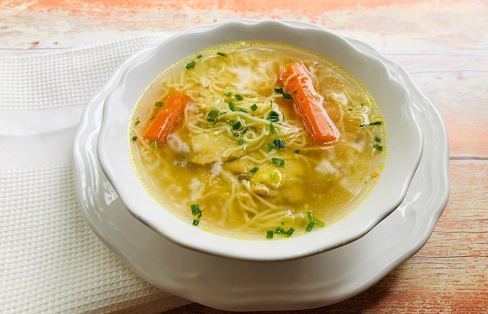
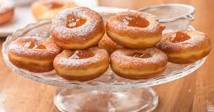

Húsleves

Hozzávalók:
- 500 g marhahús
- 1 hagyma
- 2 sárgarépa
- 1 petrezselyemgyökér
- Só, bors
- 2 liter víz
Elkészítés:
- A húst felkockázzuk és egy lábosba tesszük.
- Hozzáadjuk a vízet és felforraljuk.
- A forró levest lehabozzuk, majd a zöldségeket hozzáadjuk.
- 10 percig főzzük, majd lassú tűzön főzzük még 1 órán keresztül.
- Ízesítjük sóval, borssal, és tálaljuk.
Pasta Carbonara

Hozzávalók:
- 200 g spagetti
- 100 g pancetta vagy szalonna
- 2 tojás
- 50 g parmezán sajt
- Só, bors
- Olívaolaj
Elkészítés:
- A tésztát forró, sós vízben kifőzzük.
- A pancettát vagy szalonnát felkockázzuk és olívaolajon megpirítjuk.
- A tojásokat felverjük, hozzáadjuk a parmezánt és sóval, borssal ízesítjük.
- A kifőtt tésztát összekeverjük a pancettával, majd hozzáadjuk a tojásos keveréket.
- Keverjük jól össze és azonnal tálaljuk.
Fánk

Hozzávalók:
- 500 g liszt
- 2 tojás
- 200 ml tej
- 50 g cukor
- 7 g élesztő
- Olaj a sütéshez
- Porcukor
Elkészítés:
- A tejet meglangyosítjuk, és az élesztőt felfuttatjuk benne egy teáskanál cukorral.
- A lisztet a cukorral és a tojásokkal összekeverjük, majd hozzáadjuk az élesztőt és a langyos tejet.
- Kelesztjük 1 órán keresztül, majd kinyújtjuk és fánkformákat szaggatunk.
- Az olajat felhevítjük, és a fánkokat aranybarnára sütjük.
- Porcukorral meghintve tálaljuk.